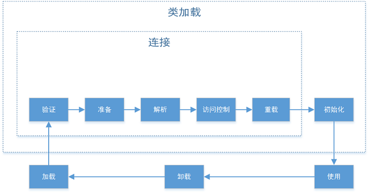

JVM类加载与一些使用技巧
![]()
JVM提供了强大的类加载机制，使得在java程序运行时，可以动态地加载、卸载不同的类。JVM提供了三种不同的类加载器，我们也可以继承ClassLoader来实现自己的类加载器（Tomcat实现了自己的类加载器来加载不同应用的依赖）。这给了我们很大的灵活性，而且利用类加载时的初始化动作，可以实现一些很有趣的技巧。
类加载
定义：JVM把类文件加载到内存，并进行字节码校验、数据转换和解析、类初始化等操作，最终形成可以被虚拟机直接使用的java类型的过程。
JVM的一个特性是，它不是启动时把所有的.class文件加载到内存中，而是采取动态加载的方式，延迟到需要时再加载（类似Windows程序的动态链接库），而当JVM中不存在某个类的Class对象的引用时，则这个类将会被卸载。
根据JVM规范第五章（地址：Chapter 5. Loading, Linking, and Initializing），类加载的过程可以表示为下图（原谅我用visio随便画的丑图），图中有一定的顺序，但是有些阶段JVM规范并未规定一定要这样，这里只是直观上的顺序：

接下来一一讲解一下每个过程：
加载(Loading)通过类的全限定名获取此类的二进制字节流→
将这个字节流所代表的静态存储结构转化为方法区的运行时数据结构→在堆中生成一个代表这个类的java.lang.Class对象作为方法区这些数据的访问入口。加载部分可以通过JVM自带的类加载器完成，也可以通过用户自定义的类加载器完成，由此，用户可以在这个阶段进行很多的定制，例如在Tomcat中自定义了类加载器，加载WEB-INF/lib和WEB-INF/classes下的类。验证(Verification)连接阶段的第一步，确保Class文件的字节流中包含的信息符合当前虚拟机的要求，并且不会危害虚拟机自身的安全。在JVM规范中，这个部分只有很简略笼统的描述（几行，只规定了在验证错误时需要抛出java.lang.VerifyError），所以具体实现依赖于JVM的实现，但一般都会进行这些操作：- 文件格式验证：验证字节流是否符合JVM规范，并且要满足当前JVM的版本运行需求；
- 元数据验证：进行语义分析，验证字节流内容是否符合Java规范；
- 字节码验证：数据流、控制流分析，保证语义合法、合乎逻辑；
- 符号引用验证：在将符号引用转化为直接引用时，验证合法性，保证解析阶段的正确性。
准备(Preparation)为类变量（static修饰）分配内存并设置初始值。这里的初始值并不是初始化的值，而是该变量的数据类型的默认零值。但有一个例外，如果这个类变量同时也被final修饰，那么在编译时，就会直接为这个常量赋上目标值。解析(Resolution)虚拟机将常量池中的符号引用替换为直接引用，JVM规范中，规定的解析动作有:- 类或接口解析
- 类字段解析
- 类方法解析
- 接口方法解析
- 方法类型和方法句柄解析
- 调用现场符号（Call site specifier）解析
访问控制(Access Control)根据访问控制符（public、protected、private以及默认的包访问权限），限制方法调用和子类的方法重写等的访问权限。覆盖(Overriding)子类覆写父类方法（根据JVM实现，在虚函数表中指向子类的方法入口）。初始化(Initialization)执行类构造器的<clinit>()方法，进行类变量和其他资源的初始化。Java虚拟机规范规定了有6种情况必须立即对类进行初始化（加载、验证、准备必须在此之前完成）:- 调用
new、getstatic、putstatic、invokestatic指令时（使用new关键字创建对象、读取类的静态字段、设置类的静态字段、调用类的静态方法）； - 当使用Java 7增加的动态语言支持时，如果一个
java.lang.invoke.MethodHandle实例最终的解析结果为REF_getStatic、REF_putStatic、REF_invokeStatic的方法句柄，并且这个方法句柄对应的类没有进行初始化时； - 通过反射机制对类进行调用，其未被初始化时；
- 初始化一个类，其父类未初始化时，初始化父类；
- 初始化实现了包含
非抽象、非静态方法的接口的类时（对比了一下，这个应该是Java 8增加的，应该是指default方法）； - 指定的执行主类（含main方法的那个类）在虚拟机启动时。
- 调用
使用(Using)在JVM中使用加载好的类。卸载(Unloading)当JVM中不存在某个类的Class对象的引用时，则这个类将会被卸载。连接(Linking)包含验证、准备、解析、访问控制、覆盖阶段。
类加载器（ClassLoader）
类加载器是一个用来加载类文件的Java类或者JVM中的C++程序，在运行时动态加载所需的类。类加载器可以加载文件系统、网络或其他来源的类文件，就是说，不管你的类在哪，只要类加载器能够得到它的字节流（无论是文件读取、网络下载），就能被加载到JVM中。
在JVM中，有三类默认的类加载器：
Bootstrap类加载器它负责加载虚拟机的核心类库，如java.lang.*等。它是所有类加载器的父加载器。Bootstrap类加载器没有任何父类加载器，它依赖于底层操作系统，属于虚拟机的实现的一部分，它并没有继承java.lang.ClassLoader类。Extension类加载器将类加载请求先委托给它的父加载器，也就是Bootstrap类加载器，如果没有成功加载的话，再从jre/lib/ext目录下或者java.ext.dirs系统属性定义的目录下加载类。在oracle的JVM实现里，是sun.misc.Launcher$AppClassLoader类，继承自java.lang.ClassLoader类，Application类加载器也叫System类加载器。它负责从CLASSPATH环境变量中加载某些应用相关的类，CLASSPATH环境变量通常由-classpath或-cp命令行选项来定义，或者是JAR中的Manifest的classpath属性。Application类加载器是Extension类加载器的子加载器。在oracle的JVM实现里，是sun.misc.Launcher$ExtClassLoader类，继承自java.lang.ClassLoader类。
除了以上的三种类加载器，还有一种比较特殊的类型，线程上下文类加载器，这里就不赘述，可以查看这篇博客：线程上下文类加载器 。
然而，类加载这个部分有趣的地方，并不是这些自带的类加载器，而是那些可以自己定制的地方。因为类加载器并不管字节流的来源，只要能通过验证就可以了。所以，你可以通过自定义的类加载器，从互联网的任何一个地方加载一个类到你本地的JVM中；你可以加载经过加密的字节码，在加载的过程中解密，如果是经过非对称加密（RSA、ECC等）的话，便可以让不信任的人无法运行加密过的Java程序；你可以在运行时，根据环境、需求的不同，加载不同的类到JVM中；你还可以通过使用不同的类加载器加载同一个类文件，这样可以产生一些神奇的效果——这个类文件的两次加载产生的类是不同的；……
类加载还有一个双亲委托机制，就是，当加载一个类时，类加载器的调用顺序是Bootstrap类加载器→Extension类加载器→Application类加载器→自己定义的类加载器。这样，形成了一个树状结构，除了Bootstrap类加载器外，都有一个父节点（这个和类的继承树不一样，这里的双亲并不是继承的，有兴趣的可以查看Open JDK中的实现,其实很简单，链接：ClassLoader.java）。当前面的类加载器加载不了，便会委托给下一级，如果都加载不了，便会抛出ClassNotFoundException。
实现自己的类加载器很简单，只需要继承java.lang.ClassLoader，并且覆盖findClass或者loadClass方法就好了。你可能会问，为什么会有俩个覆盖选择？这个就涉及到java的兼容性黑历史了。ClassLoader在Java最初的版本中就有了，但是，委托机制是在1.2才加入的，在此之前，自定义类加载器是通过覆盖loadClass实现的，而之后，为了兼容性，便加入了findClass来供用户覆盖，这样就可以保证委托机制。区别在于，覆盖loadClass方法，加载时不会委托，而覆盖findClass则会先委托，加载不了再通过自定义加载器加载。现在不建议通过覆盖loadClass的方法来实现。这个委托机制其实还有一些问题，这里就不细说了，具体可以搜索Java模块化方面的信息。
接下来我们通过一个简单的例子来理解：
MyLoader.java
import java.io.FileInputStream;
import java.nio.ByteBuffer;
import java.nio.channels.FileChannel;
/**
* 自定义类加载器，为了简单，加载一个特定的类。<br>
* 自定义必须覆盖<code>findClass</code>或者<code>loadClass</code>方法。
* @author w-angler
*
*/
public class MyLoader extends ClassLoader {
/**
* 获取字节流，假设在F盘下有一个hhh.class
* @param name
* @return
*/
private byte[] load(){
try(FileInputStream is=new FileInputStream("F:\\hhh.class")){
FileChannel channel=is.getChannel();
ByteBuffer buffer=ByteBuffer.allocate((int)channel.size());
channel.read(buffer);
return buffer.array();
}catch(Exception e) {
e.printStackTrace();
return null;
}
}
@Override
public Class<?> findClass(String name){
byte[] b=load();
return defineClass("hhh",b, 0, b.length);
}
}
TestClassLoader.java
import javax.script.ScriptEngine;
import javax.script.ScriptEngineManager;
public class TestClassLoader {
public static void main(String[] args) throws Exception {
//Nashorn是Java 8添加的JavaScript引擎，它在ext目录下
ScriptEngineManager scriptEngineManager = new ScriptEngineManager();
ScriptEngine nashorn = scriptEngineManager.getEngineByName("nashorn");
MyLoader loader=new MyLoader();
Class<?> cls=loader.loadClass("2333，这个参数其实没用了");
System.out.println(String.class.getClassLoader());
System.out.println(nashorn.getClass().getClassLoader());
System.out.println(TestClassLoader.class.getClassLoader());
System.out.println(cls.getClassLoader());
}
}
结果：
null
sun.misc.Launcher$ExtClassLoader@42a57993
sun.misc.Launcher$AppClassLoader@73d16e93
MyLoader@64bf3bbf
从结果可以看出，基本库中的类通过Bootstrap类加载器加载，所以输出为null；在ext目录下的类，通过Extension类加载器加载；在classpath中的类，通过Application类加载器；当这些类都无法加载时，采用自定义的类加载器（如果有）加载。
类加载时的初始化
在类加载时，会进行一些初始化的操作，前面提到过，在准备(Preparation)阶段，会进行一些初始化操作，初始化类变量为零值。而在后续的初始化中，则会对静态变量赋值，并且执行其中的静态块（static关键字声明的代码块）。这部分的初始化只会在类加载时执行，且只执行一次。
而在创建一个类的对象时，也会进行一些初始化操作。下面结合这个来说明一下一个类从加载到创建一个对象，初始化的顺序：
- 父类静态变量和静态块，按声明的顺序依次执行（只在类加载时执行一次）。
- 子类静态变量和静态初始化块，按声明的顺序依次执行（只在类加载时执行一次）。
- 父类的实例变量和实例初始化块，按在代码中出现的顺序依次执行。
- 执行父类的构造方法。
- 子类实例变量和实例初始化块，按在代码中出现的顺序依次执行。
- 执行子类的构造方法。
下面实践一下：
class A{
static{
System.out.println("super class' static block");
}
{
System.out.println("super class' initialization block");
}
public A(){
System.out.println("super class' constructor");
}
}
class B extends A{
static int i;
static{
System.out.println("subclass' static block");
System.out.println(i);
}
static{
i=233;
}
{
System.out.println("subclass' initialization block");
}
public B(){
System.out.println("subclass' constructor");
}
}
public class Init {
public static void main(String[] args){
new B();
}
}
结果：
super class' static block
subclass' static block
0
super class' initialization block
super class' constructor
subclass' initialization block
subclass' constructor
由此可见初始化的顺序是怎样的。其中，在子类B中，打印i的代码块在赋值之前，所以，打印出来的是在准备阶段初始化的零值，而不是233。
使用技巧
其实也说不上什么技巧，只是对类加载机制的一些应用。
第一个，在基本库中，有几个自定义的类加载器，其中，有一个叫java.net.URLClassLoader，可以通过它来加载指定目录下的类。这样，就可以不需要在运行时指定classpath了，而是可以放在某个目录下，自定义加载，实现类似于插件的功能（Eclipse好像就是使用这种方式的）。具体可以查看这篇博客：class文件的动态加载。
第二个，在类加载时，进行字节流的解密（加载的是加密过的class文件）。这个技巧有点黑暗了，主要是因为Java很容易被反编译。如果是一些商业机密程序，被人获取的话，很容易被反编译然后被利用。所以，可以通过这种方式，来防止被第三方利用。而加密算法的选择和密钥的存储、分发，就不在这里的讨论范围了。
第三个，我经常使用的，使用静态块进行配置文件的加载和初始化，实现程序的可配置。在Web开发以及一些桌面程序开发中，都会有很多的配置，这最忌讳的就是硬编码到代码中，所以一般会有很多的配置文件（一般是.ini和.xml文件，java中有一个专门干这个的.properties文件以及java.util.Properties类，最近也看到有很多用json做为配置文件和模板的）。而这个配置文件的加载也是一个问题，首先，只加载一次，其次，最好不要手动加载。所以，一个解决方法是，将配置文件的加载和解析放在静态块中，下面是我以前写的武大教务爬虫的一个配置：
import java.io.FileInputStream;
import java.io.IOException;
import java.util.Properties;
import org.junit.Test;
public final class Address {
public static String ip;
/**
* 验证码地址
*/
public static String captcha;
/**
* 登录地址
*/
public static String login;
/**
* 成绩单地址
*/
public static String subjects;
/**
* 首页,获取姓名
*/
public static String name;
static{
try {
FileInputStream in=new FileInputStream("ip.properties");
Properties prop=new Properties();
prop.load(in);
ip=prop.getProperty("ip");
captcha="http://"+ip+"/servlet/GenImg";
login="http://"+ip+"/servlet/Login";
subjects="http://"+ip+"/servlet/Svlt_QueryStuScore?year=0&term=&learnType=&scoreFlag=0";
name="http://"+ip+"/stu/stu_index.jsp";
} catch (IOException e) {
e.printStackTrace();
}
}
private Address(){
throw new IllegalAccessError("You can not new an instance of this class");
}
}
在这个代码中，主要配置的是教务管理系统的IP（有多个，经常会抽风），可以直接通过Address来引用这些配置。当然，这个是很简单的配置，你也可以实现一些更复杂的。
这篇博客从周一开始写，因为课程、作业的问题，一直没有完成，到最后当初的热情和想法都没了，有些地方自己都看不下去了。